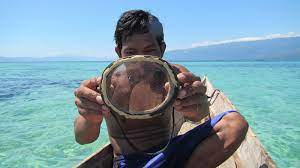
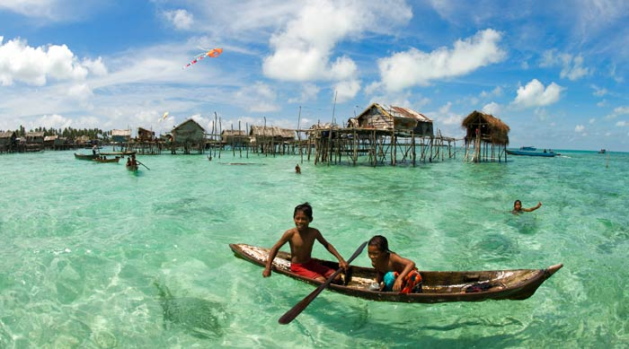
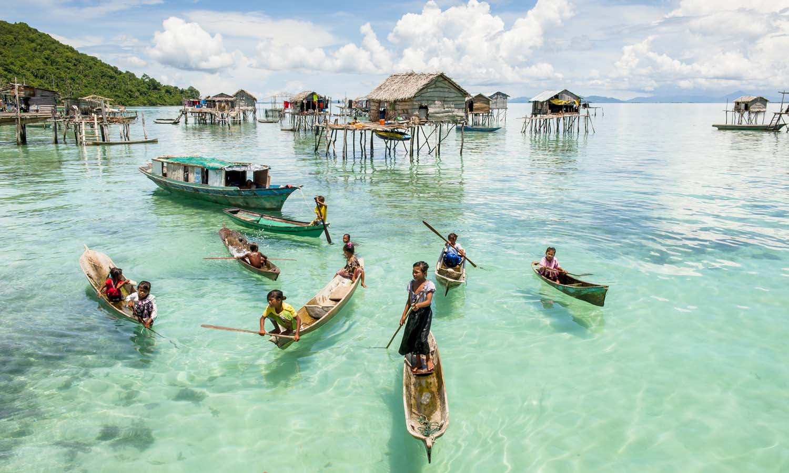
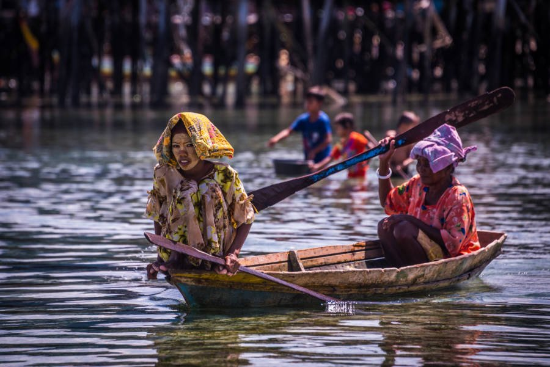

ABOUT SEA GYPSIES Life Pattern of the Bajau Laut Community Based on the census conducted, it was found that there are 10 houses (completed and semi-completed) inhabited by about 50 residents including children in Pulau Gusungan, the majority of whom are from the Bajau Laut (Pala'u) community Muslim. In terms of citizenship status, the residents of this island do not have an identity card or any identity document and it is difficult to be classified as "illegal immigrants" or "refugees of war" despite having long-lived in the waters and islands of Semporna. On behalf of the Sabah State government also faces difficulties in channelling various assistance under the Poorest People's Housing Program (PPRT) due to their status and the island has never been gazetted as a village. In other words, the construction of settlements by the Bajau Laut community on the island can be categorized as squatters only. most of the sea Bajau community in the district of Semporna began to experience a significant social transformation lately, namely began to build their homes on land or on the water on several islands such as Pulau Mabul, Dinawan, Si Amil, Omadal Bohey Dulang, Timba-Timba, Mataking and other islands in the waters of Semporna. The change in the attitude of the Bajau Laut community today is very different from their attitude in the 70s to 90s, which is to refuse to build settlements on land and prefer to live in boats only. As with the houses of the Bajau Laut community on most of the islands in Semporna, the design of the house and the building materials are simple (poor), that is, like a stopover hut. Most of the houses built by the residents are still thatched and walled with used boards or canvas. Meanwhile, the roofs of their houses are made of thatch and zinc. Based on the observation, it was also found that three houses were still abandoned for construction but had been occupied due to the lack of building materials. On average, each house that is between 15-20 feet long and 10-15 feet wide will be inhabited by 8-15 households and the rest especially the men will sleep under the house only. Despite living in crowded and uncomfortable conditions, the brotherly and selfless attitude shown by them was high. In addition to building houses on the island, there are also a handful of Bajau Laut (Pala’u) people who still live with their families in boats and only occasionally go up to the island for certain purposes. Among the main reasons that are often given for not moving to the mainland are getting sick, being hit by a disaster, continuing ancestral traditions, not being able to build a house and so on. In other words, the Bajau Laut community who live in this boat only makes the waters of Pulau Gusungan as a temporary stopover, especially when the sea is rough and will move and return according to current needs. , the Bajau Laut community living in these boats also live in similar conditions. All their daily lives like cooking, eating and drinking, washing and drying clothes, resting and sleeping, having children, catching, processing and drying fish and so on are all done in this boat. |
|---|
|  In terms of everyday spoken language, they use the Suluk language and is not very fluent in Malay. Nevertheless, they always show a friendly attitude when meeting outsiders who are not residents of the island. Based on the observation also found that there are no basic facilities such as running water, electricity, etc. provided by the government as enjoyed by other residents in some nearby islands. To get water supply, residents had to go to Pantai Manis which faces Gusungan Island and is located about 10 kilometres on the mainland of Semporna. Meanwhile, light from candles, kerosene lamps and gas lamps are used to illuminate the house at night. In other words, the population of the island seems to be lagging behind in terms of development and disconnected from communication. From the aspect of education, the island also does not have schools for children and the general population. This has resulted in all the children on the island being out of school and illiterate. As such, most of these children’s time is only spent playing, bathing and following the family fishing only.  Since the island has no gravity wells or water tanks, then residents will usually use only sea water for bathing, washing dishes and washing clothes. Although in theory this sea water has natural properties to treat skin and scabies, but this sea water also has side effects that cause the hair to turn yellow and the skin to quickly black and dry when sunbathing in the sun. To prevent dry skin, women on the island usually wear cool powder on the face even during the day. The island also does not have a health clinic for medical purposes and only relies entirely on the services of mobile health clinics provided by the Semporna hospital. In an emergency, the islanders had to come to the mainland themselves for treatment. As the terrain of the island does not allow farming activities and there are no grocery store facilities, then cassava known as putu has been made the main dish to replace rice eaten with grilled fish only. One thing that is quite interesting in the minds of the people on this island is that they still practice the concept of communal work in preparing food that seems to be extinct among other communities on the islands in Semporna. After preparing the food, all the residents of the island will gather and eat together just to fill their stomachs. Although the community in Pulau Gusungan is quite separate from the various currents of development, but the interest in sports is still maintained even in the form of rates only. Based on that spirit, the residents of this island have gotong royong to build a basketball court even if it only has a sand floor. This basketball activity is usually carried out in the evening regardless of gender and age. Apart from playing sports, the men also often spend time playing cards and chatting. Meanwhile, her mothers are busy with various chores in the kitchen and the children spend a lot of time playing by the beach looking for snails and bathing. |